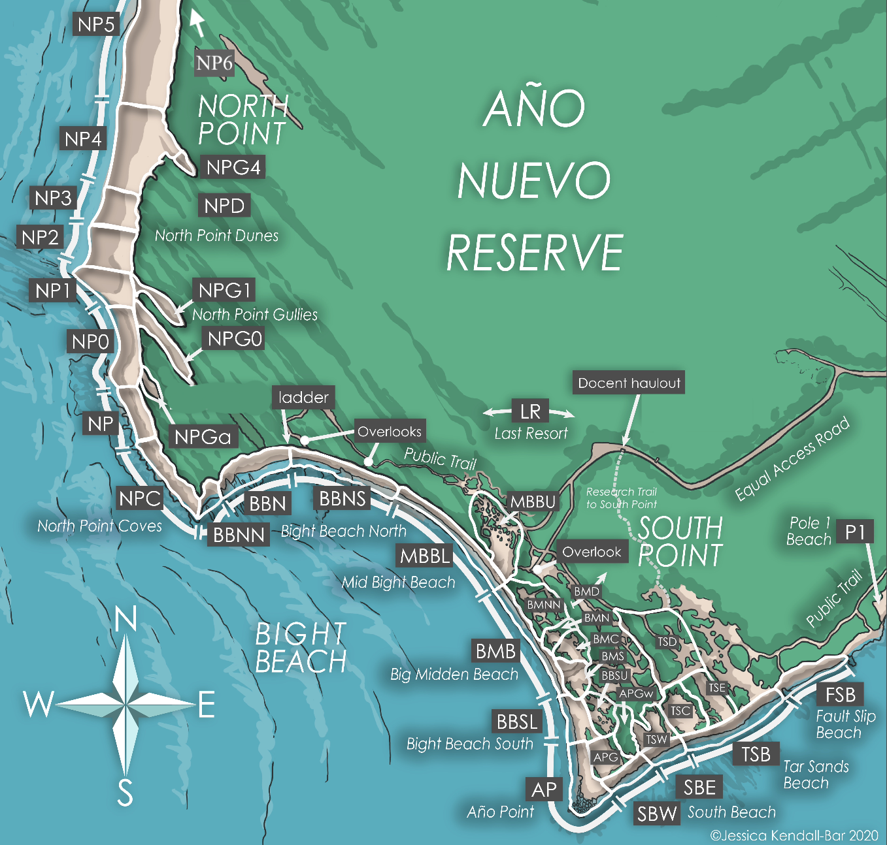
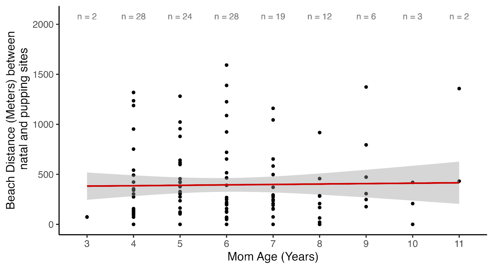
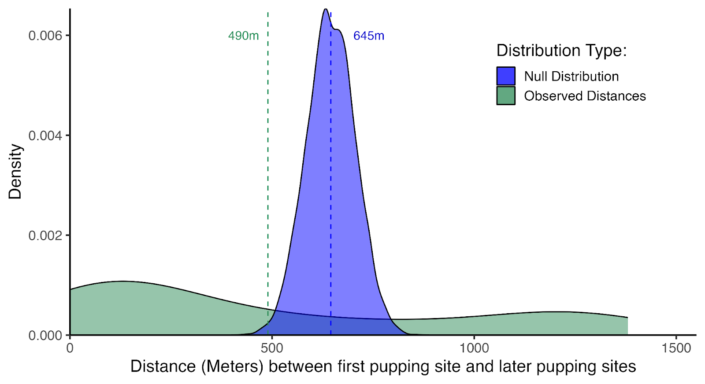
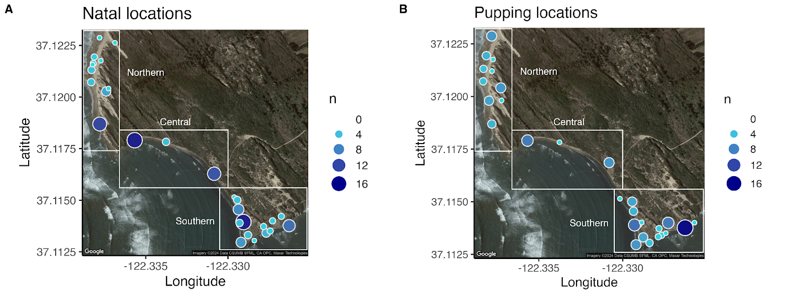

Fine-scale philopatry in northern elephant seals
Mirounga angustirostris
Abstract
Natal philopatry, the practice of a mother reproducing in the same region as her own natal site, has been documented in numerous seal species. However, philopatric studies on marine mammals largely focus on cross-colony scales, leaving a knowledge gap for fine-scale philopatry within colonies. We sought to identify the rate of fine-scale natal philopatry in northern elephant seals and additional drivers of site selection, including sustained site fidelity across years. Using 20 years of mark-recapture data collected from the ~3,200-meter long Año Nuevo colony in California, we discovered high rates of fine-scale philopatry, with females pupping an average of 395 meters from where they were born. Females producing pups show high site fidelity to the site of their first pup production, although the correlation is not as strong as to their natal site. We discovered that breeding colonies exhibit higher philopatric plasticity against dune shifts than to beach erosion. Our results have implications for within-colony genetic connectivity and generational shifts in breeding sites influenced by coastal erosion.
Keywords
Natal philopatry, pupping, site fidelity, pinniped, beach usage, breeding sites, fine-scale philopatry, natal straying
Introduction
Natal site fidelity, or philopatry, refers to the event of returning to one’s birth site to breed, and is a life history adaptation adopted by numerous species, including salmon (Hendry, 2003), sparrows (Wheelwright, 1998), seabirds (Coulson, 2016; Pyle, 2001; Spear, 1998), sea turtles (Stiebens, 2013), and pinnipeds (Fabiani, 2006; Hastings, 2017; Hoffman, 2012; Pomery, 2001; Wolf, 2007), among others (Clutton-Brock, 2012). Wide-ranging populations benefit from philopatry because it increases the ability to locate a mate and facilitates familiarity with natural conditions and variability at the natal site (Clutton-Brock, 2012; Hendry, 2003). However, there is a risk of inbreeding if a population exhibits high philopatry (Coulson, 2016; Clutton-Brock, 2012). Thus, a certain level of straying beyond the birth colony is expected and beneficial, as it increases the genetic diversity between colonies (Bonnell, 1974). Genetic diversity is often discussed when addressing natal philopatry, either as an indicator (Stiebens, 2013) or as a consequence of philopatry (Clutton-Brock, 2012; Fabiani, 2003). While broad-scale philopatry to individual colonies has been documented in northern elephant seals (Mirounga angustirostris) (Condit, 2023; Zeno, 2021), fine-scale philopatry within colonies (e.g., the distance within a colony between a female’s natal site and her subsequent pupping site) has not been examined. Our study aims to identify the rate of fine-scale (within-colony) natal philopatry and additional site selection drivers, including site fidelity across breeding seasons and natal straying.
The relationship between genetic variation and philopatry is exceptionally important in the case of northern elephant seals due to the low genetic variation found in the current population, even compared to their southern counterpart, the southern elephant seal (M. leonina) (Bonnell, 1974; Hoelzel, 1993). Northern elephant seals were nearly hunted to extinction during the 19th century before protections were in place, resulting in an extreme genetic bottleneck in the surviving population of roughly 30 individuals (Hoelzel, 1993). Despite this dramatic culling, the northern elephant seal population has recovered and established over a dozen breeding sites ranging along the North American west coast from Baja California to Vancouver’s Race Rocks marine protected area, with a total estimated population size of 210,000 - 239,000 individuals as of 2010 (Lowry, 2014; Riedman, 1990). While the species’ low genetic variation is linked to the genetic bottleneck (Hoelzel, 2024), high rates of philopatry could also inhibit genetic diversification (Lopes, 2015).
Northern elephant seals rely on colony sites for yearly breeding and molting (Riedman, 1990). Adult females return to established colonies between December and February to pup. Female elephant seals prefer cobblestone and sandy substrate during the breeding season (Arias-del-Razo, 2016; Campagna, 1992). Nursing females remain with their pups for approximately four weeks before abruptly weaning them to resume foraging and rebuild the energy reserves lost while on the beach (Costa, 1986). Females return to their colonies once more between April and June to catastrophically molt, a haul-out period lasting 32 days on average (Worthy, 1992; Beltran, 2024). Following the molt, females undergo an eight-month foraging migration to rebuild fat reserves for the subsequent breeding season (Robinson, 2012). During this trip, seals travel nearly 10,000 km into the North Pacific Ocean and return only days before giving birth to their pups (Le Boeuf, 2000; Beltran 2022; Stewart 1995).
Our study focuses on the mainland colony of northern elephant seals located at Año Nuevo Reserve, California, USA. Using these seals as a model system, we characterize fine-scale site selection trends by considering fine-scale natal philopatry, site fidelity, and geographic shifts over time. Our goal was to illuminate possible drivers of the broad-scale dispersal of elephant seals by distinguishing fine-scale dispersal trends. Our first objective was to assess how far moms gave birth from their natal site within the Año Nuevo colony by mapping these distances to distinguish straying trends. Our second objective was to understand whether fine-scale site fidelity was maintained across breeding seasons. For a population with low genetic diversity that exhibits broad-scale philopatry, we hypothesized that low rates of fine-scale philopatry would be optimal for the species to increase genetic variation within colonies. Northern regions of Año Nuevo Reserve experience greater topographic changes over time, including shifting sand dunes and erosion due to higher exposure to an active coastal zone, and the prevailing swell direction coming from the northwest (Supplemental material). We hypothesized that regions of the Año Nuevo colony that are more susceptible to dune shifts would discourage high rates of site fidelity over time. We track the directions of natal straying to determine if regions distinct in their physical characteristics will have different immigration/emigration rates within the colony. We compare our findings to site-selection trends observed across other northern elephant seal colonies and within other phocid species.
Methods
Site
Data was collected from the northern elephant seal colony within Año Nuevo Reserve (37.12° N, 122.31° W) in San Mateo County, California. The colony encompasses two sites - the mainland and Año Nuevo Island, which is 500 meters offshore (Le Boeuf, 2011). Northern elephant seal pups were first observed on Año Nuevo Island in 1961, and the first pup on the mainland was observed in 1976 (Le Boeuf, 2011; Orr, 1965). Between 1961 and 2015, the birth rates of the Año Nuevo mainland colony increased from an initial 12 to nearly 2,000 pups annually (Lowry, 2014). A long-term mark-recapture program at Año Nuevo began in 1967 (LeBoeuf et al. 2019), and the ongoing intensive mark-recapture efforts have generated robust sample sizes for numerous in-depth population dynamic and life-history studies (Beltran, 2021; Condit, 2023; Condit, 2022). This colony is unique amongst others as its history has been well documented since initial colonization (Le Boeuf, 2011). The Año Nuevo mainland colony has roughly 3,219 meters of beach (Holser, 2021). For clarity and to provide detailed beach usage, we separated the reserve into 38 different beaches (Figure 1). We grouped these beaches into three regions differentiated by unique physical characteristics to analyze how straying may indicate desired beach structure (Table 2; Supplemental material).
Data collection
The long-term mark-recapture program at Año Nuevo Reserve encompasses two separate fieldwork efforts: weanling weighing and flipper tag resights. Weanling weighing efforts take place between February and March, immediately after pups are weaned from their mothers. Researchers collect weight, length, and girth measurements from ~ 100 - 300 weanlings each season. In addition, each handled weanling receives two green flipper tags with a unique alphanumeric identification number which allows researchers to keep track of individuals within and across colonies through resight efforts. Weanling weighing integrates new individuals into the larger study sample of the Año Nuevo colony.
Near-daily flipper tag resights take place at Año Nuevo between October and June, with ~360,000 observations of 50,000 seals recorded to date (R. Beltran, pers. comm.). Resight efforts are heightened during the breeding and molt seasons to account for higher abundances of seals returning to the colony at these times. Researchers document flipper tags and/or dye marks of individuals within the colony, along with the date, age, sex, molt status (during molt season), pup status/ID (during breeding season), and the beach where each individual was observed (Figure 1). Resights are then entered into the elephant seal research program’s resight database.

Georeferencing
We georeferenced the beaches and gullies documented during flipper tag resights to quantify distances between pupping events as described below. We utilized the freehand raster georeferencing plugin in QGIS to assign coordinate values to each beach. Satellite imagery required for this process was obtained from Planet (Image, 2022). Coordinate values were acquired using the UTM zone 10N coordinate projection. Using the georectified version of the map in Figure 1, we calculated the coordinates from the estimated center of each beach/gully. There were 13 beach names recorded in resight entries that do not exist in the current colony map (Figure 1) primarily due to changes in beach names over time. Of these beach names, one was omitted, and we estimated the most appropriate coordinate values for the other 12 (described in Table 1).
We used R statistical software to calculate distances between each possible combination of observed natal and pupping sites (R, 2021). Spatial vector data was organized using the ‘sf’ package (Pebesma; 2023, 2018). Combining the 40 existing beaches and the 12 additional beaches not featured in Figure 1, we created a 52 x 52 matrix to determine the distances between each possible beach combination. With this methodology, it is important to note that matrix values depict distances between the general beaches where each seal was observed, not the seal’s exact location within the reserve (i.e., a beach that is 100 meters long may contain two seals 99 meters apart from each other, but their distance in the analysis would be the same). Due to this, distance values are discrete rather than continuous. Figures were created using Rstudio’s ‘ggplot2’ package (Wickham, 2016).
Fine-scale natal site fidelity
This study only incorporates individuals from the mainland colony, which will be called the Año Nuevo colony hereafter. Data of all known mom-pup pairs were extracted from the resight database between 2000 and 2023, resulting in a total sample size of 124 mother-pup pairs each with known birth locations. Some pairs include repeat moms with different pups - as elephant seals only have one pup annually, repeat mom-pup pairs refer to records that document moms returning for more than one breeding season. For a pair to qualify for data extraction, a mom’s birth beach (natal site) and her subsequent pupping beach must be known. Additionally, both beaches must be located within Año Nuevo Reserve. Accordingly, we discarded data pairs containing females immigrating from other colonies. If mom and pup were observed in different beaches throughout the same breeding season, the pupping site was defined as the first beach in which the pup was observed.
The beach name of a female’s birth site (natal site) and their subsequent pupping sites were paired based on individual mom and pup IDs. Distances between natal and pupping sites were assigned from the distance matrix described earlier based on beach name for each mom-pup pair. We conducted a permutation test to evaluate our null hypothesis that the mean distance between natal and pupping sites for our sample group is not significantly different than that decided by random (but possible) chance. Our alternative hypothesis was that the mean distance between natal and pupping sites of female seals at Año Nuevo is shorter than by random chance, indicating fine-scale philopatry. We randomized distances of the sample group by scrambling the mom/pup beach assignments, thus randomizing the possible distances between natal and pupping sites. We randomized the sample group 1,000 times and created a null distribution using the mean distance from each run (Figure 2). P values were calculated by dividing the number of times the observed mean appears as one of the null mean values by 1,000 (the total number of null mean values).
Fine-scale site fidelity across breeding seasons
Pulling from the 124 known mom-pup pairs extracted from the database using parameters described earlier, we isolated pairs with moms that gave birth at least twice. This resulted in a total sample size of 54 mom-pup pairs. These pairs consisted of the observation beach of the first pup and the observation beach of later pups, joined by mom ID. Respective distances were pulled from the distance matrix and applied to each pair. The same permutation test used in the ‘Fine-scale natal site fidelity’ section was used to develop a null distribution for distances between first pupping and later pupping.
Regional shifts in recruitment
We plotted the natal and subsequent pupping sites of 124 female elephant seals to determine if female elephant seals exhibit stronger philopatry in different regions of the colony. We defined three separate regions of the colony based on different topographic characteristics. The northern region is characterized by a more active/exposed coastline and shifting sand dunes. The central region is relatively sheltered with narrow beaches prone to flooding during the breeding season. The southern region includes a large sandy peninsula with a protected beach on the southern coast of the reserve.
Results
Fine-scale natal site fidelity
We measured distances between natal and pupping sites of 124 adult female elephant seals, ranging in age from 3 to 11 years old. The mean distance between natal and pupping sites of adult females was 395 meters (Figure 2), which is significantly shorter than the expected distance of 613 meters if pupping sites were chosen at random (p < 0.001, Figure 2). The maximum distance between natal and pupping sites was 1,593 meters. 25% (n = 32; Q1) of females gave birth within 124 meters of their natal site and 75% (n = 93; Q3) of females gave birth within 522 meters of their natal site. 9% (n = 12) of females gave birth within their natal beach (Figure 2).
Distances between natal and pupping sites are variable as a function of maternal age and not significant between age groups (Figure 3). Mean distances remained below 500 meters between ages 3 and 8 years old. Outliers (seals whose pupping distance was much further from their birth distance) were present in age groups 4, 6, 7, and 8.
![Figure 2: Observed distances between natal and pupping sights were closer than expected from random chance, indicating fine-scale philopatry in northern elephant seals. Density plot depicts the frequency of geographic distances between mother and pup birth sites of 124 known mom-pup elephant seal pairs (orange = observed distances between natal and pupping sites). The blue curve represents the null distribution of randomized distances for comparison. Dashed lines highlight mean values of observed distances (orange) and null distances (blue). P-value < 0.001 for the permutation test.](./content/Figures/Fig.2.png)

Fine-scale site fidelity across breeding seasons
The mean distance between the first pupping site and later pupping sites was 490 meters, which was less than the mean distance of the null distribution from the permutation test (645 meters; Figure 4). The observed density curve displays a bimodal relationship, with the most frequent distance between the first and later pupping sites being 131 meters. A slight increase in abundance peaks at 1,204 meters (Figure 4). 27.78% (n = 15) of females gave birth within 100 meters of their first pupping site, while 74.07% (n = 40) of females gave birth within 861 meters of their first pupping site. Comparison with the null distribution suggests the distance between the first and subsequent pupping sites was closer than expected from random chance ( p < 0.003, Figure 4).

Regional shifts in recruitment
We mapped natal (A) and later pupping (B) sites of 123 adult female seals ranging in age from 3 - 11 years old to explore whether elephant seals exhibit stronger philopatry in different regions of Año Nuevo Reserve (Figure 5). One mom-pup pair was excluded in this analysis due to a natal site residing on a beach not present on our map renderings. Birth (natal or pupping) sites with high abundance are depicted as large dark blue circles in Figure 5. Natal sites of high recruitment abundance include BBN (n = 15) and BBS (n = 15)(A). Only one pupping site (TSB; n = 16) was of high pupping abundance (B).
Northern
The northern colony is defined as all beaches north of NPC (Figure 1). Of the northern region, the greatest abundance of seals were born at beach site NP. The abundance of females born at NP was greater than the amount that returned to pup there. In contrast, neighboring beaches NP4, NP5, and NPG1 had a higher amount of females pupping there as compared to the number of females born. The remaining beach sites in the northern region remained relatively stable between natal and pupping abundance. The northern region experienced a more even distribution in pupping sites compared to natal sites (Figure 4), which were more localized in NP. While most females reproducing in the northern region were born in the northern region themselves, 9 individuals were from the central region and 9 were from the southern region (Fig. 6). Overall, more seals pupped (n = 38) in the northern region of Año Nuevo than were born there themselves (n = 32). An increase in pupping frequency and dispersal across the northern region of Año Nuevo is noteworthy as this region has experienced high levels of environmental change from winter storm swells, which could influence site selection.
Central
The central colony consists of beaches MBBU, MBBL, BBN, and BBNS. Natal sites were highly clustered in BBN. The central region experienced a decline in females returning to their specific natal beach and broader natal region (Central) to pup, with an overall decline of nearly half (decrease of -48.28 %; see supplemental material). While most of the females that returned to the central region to pup were born in the central region themselves, 5 individuals were from the northern region and 3 were from the southern region. This region was unique in that more seals born here pupped in the northern and southern regions than returned to pup in the central region (Figure 6).
Southern
The southern region of the colony includes all beaches southeast of BMB (Figure 1). Female natal sites were clustered at BBS, and pupping sites were highly aggregated in TSB. Sites BBS and TSB are distanced 248m apart and experienced contrasting abundance shifts. The relative abundance of natal sites at BBS (Natal; n = 15) was larger than the abundance of seals that used the same beach to pup (Pupping; n = 3). In contrast, the abundance of seals born at TSB (Natal; n = 9) was lower than the abundance of seals that used TSB to pup (Pupping; n = 16). The southern region experienced an overall increase of pupping from natal sites by 18.18% (Table 2; Supplemental material). The majority of females moving to pup in the southern region were from the central region (n = 13), and fewer were from the northern region (n = 8) (Figure 6).


Discussion
While broad-scale natal philopatry has been documented in northern elephant seals, we lack a fundamental understanding of whether females exhibit fine-scale (within-colony) natal philopatry and if so, whether it lasts throughout their lifetime. Extensive mark-recapture efforts over the past 20 years allowed us to understand fine-scale natal philopatry and sustained site fidelity within the northern elephant seal colony at Año Nuevo Reserve. Females gave birth a mean distance of 395 meters from their natal site, a distance significantly closer than expected by chance. Fine-scale site fidelity was sustained over multiple pupping events in relation to the first pupping site, although the correlation is substantially weaker than that of natal sites. Natal straying (patterns associated with individuals that did not maintain natal philopatry) was most prominent in the colony’s central region. The northern and southern regions experienced an increase in pupping site abundance, with animals abandoning natal sites in the central region.
Evidence of sustained site fidelity across breeding seasons has been observed for numerous pinniped species, including northern fur seals (Callorhinus ursinus) (Hoffman, 2012), Galapagos sea lions (Zalophus wollebaeki) (Wolf, 2007), ringed seals (Pusa hispida) (Kelly, 2010), gray seals (Halichoerus grypus) (Pomeroy, 2000; Pomeroy, 2001), Weddell seals (Leptonychotes weddellii) (Cameron, 2007; Croxall, 1983), southern elephant seals (Mirounga leonina) (Fabiani, 2006; McMahon, 2004), and northern elephant seals (Mirounga angustirostris) (Reiter, 1981; Abrahms, 2018, Figure 4). Southern elephant seals of the Falkland Islands have been observed pupping an average distance of 500 meters from their previous pupping sites (Fabiani, 2006), and we observed nearly the same average distance for northern elephant seals at Año Nuevo (490 meters, Figure 4). This similarity is noteworthy, considering the difference in colony site size. The Falkland Island colony is over 1,000 meters longer than Año Nuevo (Falkland Islands total beach length: 4,354 meters; Fabiani, 2006. Año Nuevo total mainland beach length: 3,219 meters; Holser, 2021), which suggests that colony site size does not increase the frequency of site fidelity. To test this hypothesis, future studies could compare fine-scale natal philopatry between Año Nuevo’s mainland and island colonies. Our study measured site fidelity to the site of first pupping rather than the site of the most recent pupping, which is not a common metric used in studies of site fidelity. This is likely why we did not find a strong correlation between increased site fidelity and age, which contradicts the findings of similar studies in other phocids (Cameron, 2007).
Of the previously listed pinniped species, only gray seals (Pomeroy, 2000), northern fur seals (Hoffman, 2012), and southern elephant seals (Fabiani, 2006; Hofmeyr, 2012; McMahon, 2004) are known to exhibit significant fine-scale natal philopatry. While phocid species that breed on pack ice cannot exhibit philopatry due to the dynamic nature of their habitat, hooded and harp seals have been observed to breed in approximately the same areas in which they were born (Davis, 2008; Costa and McHuron, 2024). Northern elephant seals are known to exhibit cross-colony philopatry (Reiter, 1981; Zeno, 2021; Le Boeuf, 2019), with 87% - 90% of female seals born in the Año Nuevo colony returning to the colony to breed (Le Boeuf, 2019). However, this is this species’ first examination of within-colony natal site fidelity. Our findings indicate that northern elephant seals exhibit fine-scale natal philopatry, with an average distance from natal sites being 390 meters, 75% of females pupping within 522 meters of their natal site, and 12 individuals pupping within ~20 meters of where they were born. This is significantly closer than observed in their southern counterparts (~6,000 meters from natal sites; Hofmeyr, 2012), though differences in analysis resolution could skew this comparison. The resolution of natal philopatry in this study is limited to the beach each seal was observed in rather than each seal’s specific location within each beach. Our findings of fine-scale philopatry in northern elephant seals are congruent with related phocid species, but present a species-specific genetic risk.
High site fidelity and philopatry rates are theorized to ensure familiarity with an individual’s natal site and guarantee breeding partners for species that encompass a large foraging range (Clutton-Brock, 2012). While northern elephant seals have successfully recovered from near extinction with this life history strategy, there are concerns for the future persistence of the population considering the resulting limited genetic diversity. The oceanic range of northern elephant seals is highly uniform and provides few opportunities for natural selection to act on genetic variability (Bonnell, 1974). Populations with low genetic variability are inherently at risk of disease and parasite transmission (Cross, 2009) - a risk which is further heightened in northern elephant seals as they congregate in high-density harems during the breeding season. Exhibiting high natal site fidelity can further limit genetic variability during their time on land by increasing inbreeding risk. There is evidence that other phocid species that exhibit high natal philopatry are able to recognize their kin (Pomeroy, 2000) which may mitigate inbreeding within colonies, but this has not yet been documented in elephant seals.
We mapped the natal and pupping sites of 124 adult female seals to visualize patterns of natal straying within the Año Nuevo colony. Comparing the natal map with the pupping map (Figure 5A and B), changes in abundance at a given site indicate straying. We found that the southern and northern region both experienced an increase in abundance, while the central region experienced a decrease in abundance. As the mean distance between a female’s natal site and pupping site was 395m, we assume the majority of straying occurred from the central region to the neighboring southern and northern regions, as the central region is roughly 512m long (Table 2; Supplementary material). This expectation is supported by Figure 6, which links adult female’s natal regions to their pupping regions.
While most natal sites in the northern region were aggregated at beach site NP, pupping sites were more dispersed throughout the region (Figure 5). The northern region of Año Nuevo is more exposed to the effects of harsh winter storms and active coastline activity, causing shifts in sand dunes (Supplementary material). This means the beach or gully a female was born in may not have existed when she returned for later breeding seasons which could explain some short-range natal straying events in the northern region. Changes in beach topography are reflected in satellite imagery between 2018 and 2023 (Supplemental material), revealing the expansion of gully NPGa following the record-breaking atmospheric river event that impacted the San Mateo coastline in late 2020 (US Department of Commerce). Dune shifts have been attributed to discouraging natal philopatry in a population of gray seals on Sable Island - a species that otherwise exhibits fine-scale natal site fidelity (Weitzman, 2017). We hypothesized the dynamic nature of the northern region would increase straying towards the other regions. While there was more dispersal at a beach level, the northern region maintained a higher rate of natal philopatry than natal straying. This suggests northern elephant seals exhibit high plasticity in response to active coastlines and shifting dunes. Populations that colonize such habitats exhibit weaker fine-scale beach-level (resolution; ~20m) natal philopatry than colonies of a less dynamic habitat, but still maintain fine-scale regional philopatry (resolution; ~776m).
Figure 6 identifies the central region as the only region with a higher rate of outbound straying than inbound straying from other regions (Figure 6). As the central region had the lowest abundance of seals, this observed emigration towards higher-density harems corresponds with broad-scale emigration trends observed across colonies (Condit, 2023). The central region has the least amount of available beach space, leaving many pups vulnerable during storm events. This characteristic is unique to the central region and may drive females to stray towards the northern and southern region to pup. High rates of straying from the central region to the northern region indicates shrinking beach space is more detrimental to colony philopatry than shifting habitat structure, since shifting dunes apparently did little to deter female seals from continuing to pup in the northern region. As climate-change induced sea level rise increases beach erosion (Hanak, 2012), worsening conditions will jeopardize seal colonies with limited beach space availability/protection and will likely increase natal straying towards more protected colonies. The foreseeable result will likely be the emergence of new colonies and already established protected colonies increasing in density.
The southern region of Año Nuevo is the only region that maintained a high localized aggregation of natal sites and pupping sites, indicating a higher rate of natal philopatry compared to the central and northern regions. The southern region still exhibits fine-scale straying, which could be a product of younger females getting shunted toward the outskirts of high-density harems by more dominant females during the breeding seasons, interfering with their ability to maintain site fidelity (Le Boeuf, 2011). The stability of the southern region compared to the central and northern regions can serve as a small-scale case study indicating optimal environmental and harem characteristics sought after by elephant seals, which are valuable predictors of habitat choice by seals colonizing new areas (Condit, 2023; Zeno, 2021).
This study highlights distance from natal sites and topography shifts as possible drivers of site selection. However, another possible driver of site selection not analyzed in this study may be ‘founders’ fitness’. Founders’ fitness refers to the higher survivorship of pups born to females that arrive at the colony early in the breeding season, as adult females are able to choose the most beneficial spot in the colony to rear their young (Pomeroy, 2001). Previous studies have indicated a survivorship advantage to founders’ fitness in gray seals (Pomeroy, 2001) and southern elephant seals (McMahon, 2004). Future studies could compare natal and pupping abundance across the Año Nuevo colony with arrival dates of known moms to indicate if founders’ fitness is a driver for pupping site selection in northern elephant seals. Another possible driver is variable reproductive success, wherein an adult female who does not give birth to a pup, or gives birth to a pup but loses the pup before weaning, may be more likely to stray. Future research could link pupping and weaning success in prior and future years with pupping locations and associated habitat characteristics.
Our findings indicate high natal philopatry and immigration towards higher density harems are present on a fine-scale (within-colony) resolution for northern elephant seals at Año Nuevo, which aligns with similar findings on a broad-scale (across-colony) resolution. The observation that broad-scale trends translate to fine-scale resolution may help estimate the impact of genetic dispersal within and across colonies. Additionally, we identified shrinking beach availability as a higher risk to seal colonies than shifting sand dunes, which may help inform how other phocid colonies will respond to changes in beach structure induced by the effects of climate change.
Acknowledgments
This research was completed at the University of California Natural Reserve System’s Año Nuevo Reserve. Approval for elephant seal handling and sampling was approved by the University of California Santa Cruz Institutional Animal Care and Use Committee and following guidelines set forth by the Society for Marine Mammalogy ethics committee. Fieldwork was carried out under National Marine Fisheries Service permits #19108 and #23188. We thank C. Hale for comments on the manuscript and P. Raimondi for statistical advice.